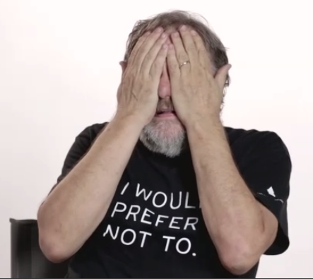
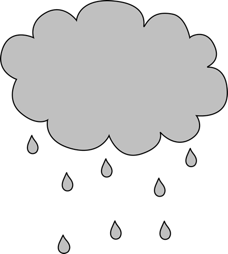
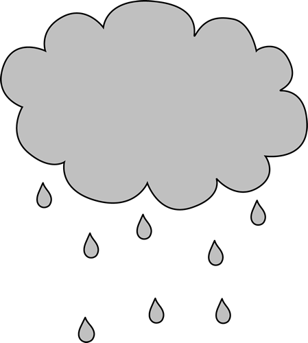
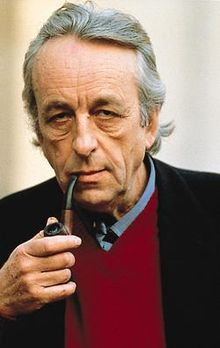

On The Social Media Ideology. GEERT LOVINK.
Contradictory consciousness-management has superseded social anxiety about Bad Faith. This has long been the thesis of Slavoj Žižek.  Let's work on this thesis and take seriously the cynical statement "They know what they do, but they do it anyway" and apply this to social media.
 There is no longer a need to investigate the
potential of "new media" and deconstruct their
intentions. The internet
There is no longer a need to investigate the
potential of "new media" and deconstruct their
intentions. The internet  has reached its
hegemonic stage. In previous decades it was
premature to associate intensive 24/7 usage by
millions with deep structures such as the
(sub)conscious. Now that we live fully in social
media times, it has become pertinent to do
precisely that: link techne with psyche.
has reached its
hegemonic stage. In previous decades it was
premature to associate intensive 24/7 usage by
millions with deep structures such as the
(sub)conscious. Now that we live fully in social
media times, it has become pertinent to do
precisely that: link techne with psyche.
The revelations of Edward Snowden arrived long after our daily surf-and-swap routines had become firmly entrenched. We know we're watched by surveillance systems
 but who can
honesty claim to constantly be aware of them?
Artistic masks are promoted as protective face
shields yet who wears them? The internet may
be broken, as the phrase goes (and IT engineers
have reached a consensus about this troubling
analysis), but this cannot be said of social
media. Like Snowden's revelations, Sherry
Turkle's evidence about smartphones inhibiting
one's empathy and ability to enjoy the virtues of
solitude have arrived late in the social media
game. How hard has it become to confront
offline boredom?
but who can
honesty claim to constantly be aware of them?
Artistic masks are promoted as protective face
shields yet who wears them? The internet may
be broken, as the phrase goes (and IT engineers
have reached a consensus about this troubling
analysis), but this cannot be said of social
media. Like Snowden's revelations, Sherry
Turkle's evidence about smartphones inhibiting
one's empathy and ability to enjoy the virtues of
solitude have arrived late in the social media
game. How hard has it become to confront
offline boredom?  It's a straight-up torture.
It's a straight-up torture.
The slogan "You are what you share" (Charles Leadbeater) expresses the transformation of the autonomous unit of the self into an outgoing entity that is constantly reproducing its social capital through the transmission of value (data) to others. Let's face it: we refuse to perceive ourselves as "slaves of the machine."
 What does it mean when we all
agree that there is an addictive element to
today's social media use, yet none of us is
apparently addicted? Are we really returning only
sporadically? What exactly is being captured
here? If anything, we're encapsulated by the
social sphere as such, not by the software, nor by
the protocols, network architectures, or the
assuredly infantile interfaces.
What does it mean when we all
agree that there is an addictive element to
today's social media use, yet none of us is
apparently addicted? Are we really returning only
sporadically? What exactly is being captured
here? If anything, we're encapsulated by the
social sphere as such, not by the software, nor by
the protocols, network architectures, or the
assuredly infantile interfaces.
Under this spell of desire for the social, led by the views and opinions of our immediate social circle , our daily routines are as follows: view recent stories first, fine-tune filter preferences, jump to first unread, update your life with events, clear and refresh all, not now, save links to read for later, see full conversation, mute your ex, set up a secret board, run a poll, comment
 through the social plug-in, add video to
your profile, choose between love,
through the social plug-in, add video to
your profile, choose between love,  haha, wow,
haha, wow,  sad, and angry, engage with those who mention
you while tracking the changes in relationship
status of others, follow a key opinion leader,
receive notifications, create a photo spread that
links to your avatar, repost a photo, get lost in the
double-barrel river of your timeline, prevent
friends from seeing updates, check out
something based on a recommendation,
customize cover images, create 'must-click'
headlines, chat with a friend while noticing that
1,326,595 people like this topic.
sad, and angry, engage with those who mention
you while tracking the changes in relationship
status of others, follow a key opinion leader,
receive notifications, create a photo spread that
links to your avatar, repost a photo, get lost in the
double-barrel river of your timeline, prevent
friends from seeing updates, check out
something based on a recommendation,
customize cover images, create 'must-click'
headlines, chat with a friend while noticing that
1,326,595 people like this topic.
Social networking
is much more than just a
dominant discourse. We need to go beyond text
and images and include its software, interfaces,
and networks that depend on a technical
infrastructure consisting of offices and their
consultants and cleaners, cables and data
centers, working in close concert with the
movements and habits of the connected billions.
Academic internet studies circles have shifted
their attention from utopian promises, impulses,
and critiques to "mapping" the network's impact.
From digital humanities to data science we see a shift in network-oriented inquiry from Whether and Why, What and Who, to (merely) How. From a sociality of causes to a sociality of net effects. A new generation of humanistic researchers is lured into the "big data" trap, and kept busy capturing user behavior whilst producing seductive eye candy for an image-hungry
audience (and vice versa).
Without noticing, we have arrived at a new, yet unnamed, stage: the hegemonic era of social media platforms as ideology.
 Products and
services are of course usually subject to
ideology. We have learned to "read"
Products and
services are of course usually subject to
ideology. We have learned to "read"  ideology into
them. But at what point can we convincingly say
they have become ideology themselves? It is one
thing to state that Mark Zuckerberg (founder of
Facebook) is an ideologue, working in the service
of US intelligence agencies, or to document
community or political groups using his social
media platform in ways unplanned or counter to
expectations inherent to its design. It is quite
another to work on a comprehensive social
media theory. It is a crucial time for critical
theory to reclaim lost territory and bring on
exactly this: a shift from the quantitative to the
qualitative, uncomputable impacts of this
ubiquitous formatting of the social. It is
liberating for research to sever itself from the
instrumental approach of (viral) marketing and
public relations. Stop pushing, start analyzing.
Network technologies are rapidly becoming the
"new normal," withdrawing their operations and
governance from view. We need to politicize the
New Electricity, the privately owned utilities of
our century, before they disappear into the
background.
ideology into
them. But at what point can we convincingly say
they have become ideology themselves? It is one
thing to state that Mark Zuckerberg (founder of
Facebook) is an ideologue, working in the service
of US intelligence agencies, or to document
community or political groups using his social
media platform in ways unplanned or counter to
expectations inherent to its design. It is quite
another to work on a comprehensive social
media theory. It is a crucial time for critical
theory to reclaim lost territory and bring on
exactly this: a shift from the quantitative to the
qualitative, uncomputable impacts of this
ubiquitous formatting of the social. It is
liberating for research to sever itself from the
instrumental approach of (viral) marketing and
public relations. Stop pushing, start analyzing.
Network technologies are rapidly becoming the
"new normal," withdrawing their operations and
governance from view. We need to politicize the
New Electricity, the privately owned utilities of
our century, before they disappear into the
background.
The 2008 chapter of internet criticism is coming to a close.
 For the next round of The
Critique of the Political Economy, the internet
and digital technologies will have to be fully
integrated. The easy opposition of California
utopians vs. Euro pessimists  has been
superseded by much larger planetary issues
such as the future of work. We need to take
internet critique beyond the normative regulation
of behavior and politicize the anxiety of the youth
and their particular addictions and distractions.
We have long come to terms with the actual and
virtual nature of the social, as its potential for
play and manipulation seems increasingly in
abeyance. Social media demand from us that we
perform in a never-ending show. We keep coming
back, always remaining logged in, until the
#DigitalDetox sets in and we're called to
different realms.
For the next round of The
Critique of the Political Economy, the internet
and digital technologies will have to be fully
integrated. The easy opposition of California
utopians vs. Euro pessimists  has been
superseded by much larger planetary issues
such as the future of work. We need to take
internet critique beyond the normative regulation
of behavior and politicize the anxiety of the youth
and their particular addictions and distractions.
We have long come to terms with the actual and
virtual nature of the social, as its potential for
play and manipulation seems increasingly in
abeyance. Social media demand from us that we
perform in a never-ending show. We keep coming
back, always remaining logged in, until the
#DigitalDetox sets in and we're called to
different realms.
The social, political, and economic promise of the internet
as a decentralized network of
networks lies in tatters. Social media
alternatives, five years after their initial
appearance, haven't made much progress at all.
Despite all well-intended critical predictions, the
herds have not moved on to greener pastures.
The overall picture is one of stagnation in a field
defined by the corporate domination of a handful
of players. We all remain stuck in the social
media mud, and it's time to ask why. Comparable
to the late-1970s stagnation in mainstream
media critique, a political economy approach will
not be sufficient if we want to come up with
workable strategies. One possible way out could
be a post-Freudian  answer to the question:
What's on a User's Mind? We need to answer the
question as to what social media actually offer.
Which desires do they appeal to? Why is updating
such a seductive yet boring habit?
answer to the question:
What's on a User's Mind? We need to answer the
question as to what social media actually offer.
Which desires do they appeal to? Why is updating
such a seductive yet boring habit?  Can we
develop a set of critical concepts that would
describe our compulsive attraction to social
media, without reducing that attraction to
addiction rhetoric?
Can we
develop a set of critical concepts that would
describe our compulsive attraction to social
media, without reducing that attraction to
addiction rhetoric? 
A starting point for reading social media as ideology would be Wendy Chun's 2004 essay on the idea of "software" as ideology. Chun's work, along with the work of Jodi Dean and others, speaks strongly to the media theorist coming to terms with the peak of neoliberal transition and the triumph of proprietary software. The prominence of ideology as a central term in debates has faded away since the mid-1980s. The backdrop of ideology theory in the 1970s was the spectacular peaking of the power of the state apparatus (also called the welfare state) that was commissioned to administrate the postwar class compromise. Whilst Daniel Bell's End of Ideology, as announced in 1960, had arrived with the victory of neoliberalism at the end of the Cold War, there was an intuitive feeling that ideology - with a small i - had not yet left the stage, and the World Without Ideas was not yet within reach, despite concerted efforts to diminish the role of public intellectuals and critical discourses.
The "Californian ideology" as defined in 1995 by Richard Barbrook and Andy Cameron helped us trace the motives underlying the internet back to their Cold War roots (and the ambivalent hippie culture). Fred Turner's 2006 classic From Counterculture to Cyberculture did much the same. But the historical perspective is not much use if it cannot explain social media's
contemporary and persistent success since the
1990s. Now, as in the 1970s, the role of ideology
in navigating the limits of existing systems is all
too real. To study ideology is to take a close look
at this everyday life, here and now. What remains
particularly unexplained is the apparent paradox
between the hyper-individualized subject and
the herd mentality of the social. What's wrong
with the social? What's right with it? Positivity is
as pervasive in California as it is in the Italian
cyberspace scene, which, in a Gramscian move,
has embraced the "social network" as a sign
within popular culture that the multitude can
beat the mainstream in its act of mediation.
Italian critics, activists, and artists are not unlike
many others in being hyperaware of all the
controversies that surround the products and
services made in Silicon Valley, while remaining
mostly positive about the magic potion called
social networking.
One function of ideology as defined by Louis Althusser  is recognition, the (in)famous interpellation of the subject that is being called upon. We can apply this and speak of the process of becoming-user. This is the unnoticed part of the social media saga. Before we enter the social media sphere,
everyone first fills out a
profile and choses a username and password in
order to create an account. Minutes later, you're
part of the game  and you start sharing, creating,
playing, as if it has always been like that. The
profile is the a priori part and the profiling and
targeted advertising cannot operate without it.
The platforms present themselves as self-evident.
They just are - facilitating our feature-rich lives.
Everyone that counts is there. It is
through the gate of the profile that we become
its subject.
and you start sharing, creating,
playing, as if it has always been like that. The
profile is the a priori part and the profiling and
targeted advertising cannot operate without it.
The platforms present themselves as self-evident.
They just are - facilitating our feature-rich lives.
Everyone that counts is there. It is
through the gate of the profile that we become
its subject.
For Althusser, we live inside ideology in this way - the formula applies in particular to social media in which subjects are addressed as users who do not exist without a profile. It is justified to use this slightly authoritarian, hermetic concept of ideology because of the highly centralized top-down structure of social media architecture in this age of platform capitalism, which leaves zero space for users to reprogram their communication spaces.
Despite all the postmodernism and cynical neoliberalism that has deemed it redundant, it is no surprise that ideology (again) rules.
(It is more
remarkable how total the concept's fall from use
has been.) The main issue is that we are less and
less aware of how it rules. When it comes to
social media we have an "enlightened false
consciousness" in which we know very well what
we are doing when we are fully sucked in, but we
do it anyway. This even accounts at a meta-level
for the popularity of Žižek's insights - and could
be one of the best explanations for his success.
We're all aware of the algorithmic manipulations
of Facebook's news feed, the filter-bubble effect
in apps, and the persuasive presence of
personalized advertisement. We pull in updates,
24/7, in a real-time global economy of
interdependencies, having been taught to read
news feeds as interpersonal indicators of the
planetary condition. So in what way does Louis
Althusser need updating?
Four decades after the Althusser era, we do not associate ideology with the state in the same way he and his followers did. To qualify Facebook and Google as falling within the Althusserian definition of "ideological state apparatus" sounds odd, if not exotic. In this era of late neoliberalism and right-wing populism, ideology is associated with the market, not with the state, which has withdrawn into the role of merely securing the market. But lest we forget, it was ideology theory itself that contributed to the "crisis of marxism." It led the way in opening up marxism to issues thrust to the fore by the student movement, the rise of feminism, and other "new social movements," and also highlighted the stagnation and bankruptcy of the Soviet Union. The growing interest in media and "cultural studies" did the rest.
Treating social media as ideology
 means
observing how it binds together media, culture,
and identity into an ever-growing cultural
performance (and related "cultural studies") of
gender, lifestyle, fashion, brands, celebrity, and
news from radio, television, magazines, and the
web - all of this imbricated with the
entrepreneurial values of venture capital and
start-up culture, with their underside of
declining livelihoods and growing inequality.
Every user has their confession: "It's definitely
harder to avoid social media than it is to give into
it. Most people tend to give into it, because its
easier".
means
observing how it binds together media, culture,
and identity into an ever-growing cultural
performance (and related "cultural studies") of
gender, lifestyle, fashion, brands, celebrity, and
news from radio, television, magazines, and the
web - all of this imbricated with the
entrepreneurial values of venture capital and
start-up culture, with their underside of
declining livelihoods and growing inequality.
Every user has their confession: "It's definitely
harder to avoid social media than it is to give into
it. Most people tend to give into it, because its
easier".
Wendy Chun wrote her 2004 essay on software as ideology
in the golden 2.0 era of the
web, when software was coming to be
considered synonymous with - and confused
with - PCs and laptops. She wrote: "Software is
a functional analogue to ideology. In a formal
sense computers understood as comprising
software and hardware are ideology machines."
She noted that software "fulfills almost every
formal definition of ideology we have, from
ideology as false consciousness to Louis
Althusser's definition of ideology as a
representation' of the imaginary relation of
individuals to their real conditions of existence.'"
In an age of installed, micro-perceptual effects
and streamed programming, ideology does not
merely refer to an abstract sphere where the
battle of ideas is being fought. Think more in line
with a Spinozan sense of embodiment - from the
repetitive strains of Tinder swiping, to text neck,
to the hunched-over-laptop syndrome.
What is crusted as orthodoxy in Althusser needs some adaptation and updating, not only in terms of a class analysis. But it is still remarkable how smoothly an Althusserian ideology framework fits today's world, as Chun proves: Software, or perhaps more precisely operating systems, offer us an imaginary relationship to our hardware: they do not represent transistors but rather desktops and recycling bins. Software produces users. Without operating system (OS) there would be no access to hardware; without OS no actions, no practices, and thus no user. Each OS, through its advertisements, interpellates a "user": calls it and offers it a name or image with which to identify.
We could say that social media performs the same function, and is even more powerful. "What are you doing?" said Twitter's original phrase. The question marks the material roots of social media. Social media platforms have never asked "What are you thinking?"
Or dreaming, for
that matter. Twentieth-century libraries are full
of novels, diaries, comic strips, and films in
which people expressed what are were thinking.
In the age of social media we seem to confess
less what we think. It's considered too risky, too
private. We share what we do, and see, in a
staged manner. Yes, we share judgments and
opinions, but no thoughts. Our Self is too busy for
that, always on the move, flexible, open, sporty,
sexy, and always ready to connect and express.
With 24/7 social visibility, apparatus and
application become one in the body. This is a
reversal of Marshall McLuhan's Extensions of
Man - we are now witnessing an Inversion of
Man. Once technology entangles our senses and
gets under our skin, distance collapses and we
no longer have any sense that we are bridging
distances. With Jean Baudrillard we could speak
of an implosion of the social into the hand-held
device in which an unprecedented accumulation
of storage capacity, computational power,
software, and social capital is crystallized.
Things get right in our face, our ears, steered by
our autonomous finger tips. This is what Michel
Serres admires so much in the navigational
plasticity of the mobile generation, the
smoothness of its gestures, symbolized in the
speed of the thumb, sending updates in seconds,
mastering mini-conversations, grasping the
mood of a global tribe in an instant. To stay
within the French realm of references: social
media as the apparatus of sexy and sporty
"active acting" makes it a perfect vehicle for the
literature of despair epitomized by Michel
Houellebecq's messy body(-politics).
Social media's imaginary community that we stumble into (and leave behind the moment we log out) is not fake.
The platform is not a
simulacrum of the social. Social media do not
"mask" the real. Neither the software nor the
interface of social media are ironic, multilayered,
or complex. In that sense, social media are no
longer (or not yet) postmodern. The paradoxes at
work here are not playful. The applications do
not appear to us as absurd, let alone Dada. They
are self-evident, functional, even slightly boring.
What attracts us is the social, the never-ending
flow, and not the performativity of the interfaces
themselves. (Performativity seems to be the
main draw of virtual realty, now in its second
hype cycle, twenty-five years after its first).
Networks  are not merely arenas of
competition among rival social forces. This is a
far too idealized point of view. If only. What fails
here is the "staging" element. Platforms are not
stages; they bring together and synthesize
(multimedia) data, yes, but what is lacking here
is the (curatorial) element of human labor. That's
why there is no media in social media. The
platforms operate because of their software,
automated procedures, algorithms, and filters,
not because of their large staff of editors and
designers. Their lack of employees is what makes
current debates in terms of racism, anti-
Semitism, and jihadism so timely, as social
media platforms are currently forced by
politicians to employ editors who will have to do
the all-too-human monitoring work (filtering out
ancient ideologies that refuse to disappear).
are not merely arenas of
competition among rival social forces. This is a
far too idealized point of view. If only. What fails
here is the "staging" element. Platforms are not
stages; they bring together and synthesize
(multimedia) data, yes, but what is lacking here
is the (curatorial) element of human labor. That's
why there is no media in social media. The
platforms operate because of their software,
automated procedures, algorithms, and filters,
not because of their large staff of editors and
designers. Their lack of employees is what makes
current debates in terms of racism, anti-
Semitism, and jihadism so timely, as social
media platforms are currently forced by
politicians to employ editors who will have to do
the all-too-human monitoring work (filtering out
ancient ideologies that refuse to disappear).
Whereas gadgets such as smartphones
and
cameras have a (hyped-up and thus limited)
fetish quality, the social network as such fails to
have such a status. The network has an
ecological status, comparable to Sloterdijk's
theory of the spheres. It surrounds us like air; it's
a Lebenswelt, a (filter) bubble, comparable to the
medieval worldview or imagined Mars colonies.
Today's cosmology consists of layers made of
dating apps, soccer portals, software forums,
and porn sites woven together by search engines,
news sites, and social media. As in the case of
air, it will become quite a task to prove its
existence, but once ideology shows its ugly side,
therapy works through the unconscious,
paradoxes start to fall apart, and the ideology
unravels.
Going back to 2004, Wendy Chun was occupied with the issue of metaphors when taking software seriously as a new kind of social realism: "Software and ideology
fit each other
perfectly because both try to map the material
effects of the immaterial and to posit the
immaterial through visible cues. Through this
process the immaterial emerges as a commodity,
as something in its own right." The details seem
less interesting to deal with: "Users know very
well that their folders and desktops are not really
folders and desktops, but they treat them as if
they were - by referring to them as folders and
as desktops. This logic is, according to Slavoj
Žižek, crucial to ideology." Is it useful to also note
that the Facebook category of "friends" has
become a similar metaphor. We can surely say
the same of the Facebook "news feed."
So, what will happen when the audience becomes too much to deal with? More important than deconstructing surface appearances is, in Chun's words, to argue that "ideology persists in one's actions rather than in one's beliefs. The illusion of ideology exists not at the level of knowledge but rather at the level of doing." Here, the rhetoric of "interactivity" obfuscates more than it reveals about the way users negotiate interfaces; since the computational and control mechanisms of interfaces are hidden, users cannot technically "interact" with them directly enough to understand them. The like economy "behind" our smart devices
is a particularly
relevant social media example. What, for
instance, will happen when we reveal that we
have never believed in our own likes? That we
never liked you in the first place?